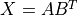
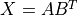
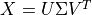

Machine learning¶
Introduction¶
HyperSpy provides easy access to several “machine learning” algorithms that can be useful when analysing multi-dimensional data. In particular, decomposition algorithms, such as principal component analysis (PCA), or blind source separation (BSS) algorithms, such as independent component analysis (ICA), are available through the methods described in this section.
Hint
HyperSpy will decompose a dataset,  , into two new datasets:
one with the dimension of the signal space known as factors (
, into two new datasets:
one with the dimension of the signal space known as factors ( ),
and the other with the dimension of the navigation space known as loadings
(
),
and the other with the dimension of the navigation space known as loadings
( ), such that .
), such that .
For some of the algorithms listed below, the decomposition results in
an approximation of the dataset, i.e.  .
.
Decomposition¶
Decomposition techniques are most commonly used as a means of noise
reduction (or denoising) and dimensionality reduction. To apply a
decomposition to your dataset, run the decomposition()
method, for example:
>>> import numpy as np
>>> from hyperspy.signals import Signal1D
>>> s = Signal1D(np.random.randn(10, 10, 200))
>>> s.decomposition()
>>> # Load data from a file, then decompose
>>> s = hs.load("my_file.hspy")
>>> s.decomposition()
Note
The signal s must be multi-dimensional, i.e.
s.axes_manager.navigation_size > 1
One of the most popular uses of decomposition()
is data denoising. This is achieved by using a limited set of components
to make a model of the original dataset, omitting the less significant components that
ideally contain only noise.
To reconstruct your denoised or reduced model, run the
get_decomposition_model() method. For example:
>>> # Use all components to reconstruct the model
>>> sc = s.get_decomposition_model()
>>> # Use first 3 components to reconstruct the model
>>> sc = s.get_decomposition_model(3)
>>> # Use components [0, 2] to reconstruct the model
>>> sc = s.get_decomposition_model([0, 2])
Sometimes, it is useful to examine the residuals between your original data and
the decomposition model. You can easily calculate and display the residuals,
since get_decomposition_model() returns a new
object, which in the example above we have called sc:
>>> (s - sc).plot()
You can perform operations on this new object sc later.
It is a copy of the original s object, except that the data has
been replaced by the model constructed using the chosen components.
If you provide the output_dimension argument, which takes an integer value,
the decomposition algorithm attempts to find the best approximation for the
dataset with only a limited set of factors and loadings ,
such that .
>>> s.decomposition(output_dimension=3)
Some of the algorithms described below require output_dimension to be provided.
Available algorithms¶
HyperSpy implements a number of decomposition algorithms via the algorithm argument.
The table below lists the algorithms that are currently available, and includes
links to the appropriate documentation for more information on each one.
Note
Choosing which algorithm to use is likely to depend heavily on the nature of your dataset and the type of analysis you are trying to perform. We discuss some of the reasons for choosing one algorithm over another below, but would encourage you to do your own research as well. The scikit-learn documentation is a very good starting point.
Algorithm |
Method |
|---|---|
“svd” (default) |
|
“mlpca” |
|
“sklearn_pca” |
|
“nmf” |
|
“sparse_pca” |
|
“mini_batch_sparse_pca” |
|
“rpca” |
|
“orpca” |
|
“ornmf” |
|
custom object |
An object implementing |
Singular value decomposition (SVD)¶
The default algorithm in HyperSpy is "svd", which uses an approach called
“singular value decomposition” to decompose the data in the form
. The factors are given by  , and the
loadings are given by
, and the
loadings are given by  . For more information, please read the method
documentation for
. For more information, please read the method
documentation for svd_pca().
>>> import numpy as np
>>> from hyperspy.signals import Signal1D
>>> s = Signal1D(np.random.randn(10, 10, 200))
>>> s.decomposition()
Note
In some fields, including electron microscopy, this approach of applying an SVD
directly to the data is often called PCA (see below).
However, in the classical definition of PCA, the SVD should be applied to data that has
first been “centered” by subtracting the mean, i.e.  .
.
The "svd" algorithm in HyperSpy does not apply this
centering step by default. As a result, you may observe differences between
the output of the "svd" algorithm and, for example,
sklearn.decomposition.PCA, which does apply centering.
Principal component analysis (PCA)¶
One of the most popular decomposition methods is principal component analysis (PCA).
To perform PCA on your dataset, run the decomposition()
method with any of following arguments.
If you have scikit-learn installed:
>>> s.decomposition(algorithm="sklearn_pca")
You can also turn on centering with the default "svd" algorithm via
the "centre" argument:
# Subtract the mean along the navigation axis
>>> s.decomposition(algorithm="svd", centre="navigation")
# Subtract the mean along the signal axis
>>> s.decomposition(algorithm="svd", centre="signal")
You can also use sklearn.decomposition.PCA directly:
>>> from sklearn.decomposition import PCA
>>> s.decomposition(algorithm=PCA())
Poissonian noise¶
Most of the standard decomposition algorithms assume that the noise of the data follows a Gaussian distribution (also known as “homoskedastic noise”). In cases where your data is instead corrupted by Poisson noise, HyperSpy can “normalize” the data by performing a scaling operation, which can greatly enhance the result. More details about the normalization procedure can be found in [Keenan2004].
To apply Poissonian noise normalization to your data:
>>> s.decomposition(normalize_poissonian_noise=True)
>>> # Because it is the first argument we could have simply written:
>>> s.decomposition(True)
Warning
Poisson noise normalization cannot be used in combination with data
centering using the 'centre' argument. Attempting to do so will
raise an error.
Maximum likelihood principal component analysis (MLPCA)¶
Instead of applying Poisson noise normalization to your data, you can instead use an approach known as Maximum Likelihood PCA (MLPCA), which provides a more robust statistical treatment of non-Gaussian “heteroskedastic noise”.
>>> s.decomposition(algorithm="mlpca")
For more information, please read the method documentation for mlpca().
Note
You must set the output_dimension when using MLPCA.
Robust principal component analysis (RPCA)¶
PCA is known to be very sensitive to the presence of outliers in data. These
outliers can be the result of missing or dead pixels, X-ray spikes, or very
low count data. If one assumes a dataset, , to consist of a low-rank
component  corrupted by a sparse error component
corrupted by a sparse error component  , such that
, such that
 , then Robust PCA (RPCA) can be used to recover the low-rank
component for subsequent processing [Candes2011].
, then Robust PCA (RPCA) can be used to recover the low-rank
component for subsequent processing [Candes2011].
{kind=link}
Schematic diagram of the robust PCA problem, which combines a low-rank matrix with sparse errors. Robust PCA aims to decompose the matrix back into these two components.¶
Note
You must set the output_dimension when using Robust PCA.
The default RPCA algorithm is GoDec [Zhou2011]. In HyperSpy
it returns the factors and loadings of . RPCA solvers work by using
regularization, in a similar manner to lasso or ridge regression, to enforce
the low-rank constraint on the data. The low-rank regularization parameter,
lambda1, defaults to 1/sqrt(n_features), but it is strongly recommended
that you explore the behaviour of different values.
>>> s.decomposition(algorithm="rpca", output_dimension=3, lambda1=0.1)
HyperSpy also implements an online algorithm for RPCA developed by Feng et al. [Feng2013]. This minimizes memory usage, making it suitable for large datasets, and can often be faster than the default algorithm.
>>> s.decomposition(algorithm="orpca", output_dimension=3)
The online RPCA implementation sets several default parameters that are usually suitable for most datasets, including the regularization parameter highlighted above. Again, it is strongly recommended that you explore the behaviour of these parameters. To further improve the convergence, you can “train” the algorithm with the first few samples of your dataset. For example, the following code will train ORPCA using the first 32 samples of the data.
>>> s.decomposition(algorithm="orpca", output_dimension=3, training_samples=32)
Finally, online RPCA includes two alternatives methods to the default block-coordinate descent solver, which can again improve both the convergence and speed of the algorithm. These are particularly useful for very large datasets.
The methods are based on stochastic gradient descent (SGD), and take an additional parameter to set the learning rate. The learning rate dictates the size of the steps taken by the gradient descent algorithm, and setting it too large can lead to oscillations that prevent the algorithm from finding the correct minima. Usually a value between 1 and 2 works well:
>>> s.decomposition(algorithm="rpca",
... output_dimension=3,
... method="SGD",
... subspace_learning_rate=1.1)
You can also use Momentum Stochastic Gradient Descent (MomentumSGD), which typically improves the convergence properties of stochastic gradient descent. This takes the further parameter “momentum”, which should be a fraction between 0 and 1.
>>> s.decomposition(algorithm="rpca",
... output_dimension=3,
... method="MomentumSGD",
... subspace_learning_rate=1.1,
... subspace_momentum=0.5)
Using the “SGD” or “MomentumSGD” methods enables the subspace, i.e. the underlying low-rank component, to be tracked as it changes with each sample update. The default method instead assumes a fixed, static subspace.
Non-negative matrix factorization (NMF)¶
Another popular decomposition method is non-negative matrix factorization (NMF), which can be accessed in HyperSpy with:
>>> s.decomposition(algorithm='nmf')
Unlike PCA, NMF forces the components to be strictly non-negative, which can aid the physical interpretation of components for count data such as images, EELS or EDS. For an example of NMF in EELS processing, see [Nicoletti2013].
NMF takes the optional argument output_dimension, which determines the number
of components to keep. Setting this to a small number is recommended to keep
the computation time small. Often it is useful to run a PCA decomposition first
and use the scree plot to determine a suitable value
for output_dimension.
Robust non-negative matrix factorization (RNMF)¶
In a similar manner to the online, robust methods that complement PCA above, HyperSpy includes an online robust NMF method. This is based on the OPGD (Online Proximal Gradient Descent) algorithm of [Zhao2016].
Note
You must set the output_dimension when using Robust NMF.
As before, you can control the regularization applied via the parameter “lambda1”:
>>> s.decomposition(algorithm="ornmf", output_dimension=3, lambda1=0.1)
The MomentumSGD method is useful for scenarios where the subspace, i.e. the underlying low-rank component, is changing over time.
>>> s.decomposition(algorithm="ornmf",
... output_dimension=3,
... method="MomentumSGD",
... subspace_learning_rate=1.1,
... subspace_momentum=0.5)
Both the default and MomentumSGD solvers assume an l2-norm minimization problem, which can still be sensitive to very heavily corrupted data. A more robust alternative is available, although it is typically much slower.
>>> s.decomposition(algorithm="ornmf", output_dimension=3, method="RobustPGD")
Custom decomposition algorithms¶
HyperSpy supports passing a custom decomposition algorithm, provided it follows the form of a
scikit-learn estimator.
Any object that implements fit() and transform() methods is acceptable, including
sklearn.pipeline.Pipeline and sklearn.model_selection.GridSearchCV.
You can access the fitted estimator by passing return_info=True.
>>> # Passing a custom decomposition algorithm
>>> from sklearn.preprocessing import MinMaxScaler
>>> from sklearn.pipeline import Pipeline
>>> from sklearn.decomposition import PCA
>>> pipe = Pipeline([("scaler", MinMaxScaler()), ("pca", PCA())])
>>> out = s.decomposition(algorithm=pipe, return_info=True)
>>> out
Pipeline(memory=None,
steps=[('scaler', MinMaxScaler(copy=True, feature_range=(0, 1))),
('pca', PCA(copy=True, iterated_power='auto', n_components=None,
random_state=None, svd_solver='auto', tol=0.0,
whiten=False))],
verbose=False)
Blind Source Separation¶
In some cases it is possible to obtain more physically interpretable set of components using a process called Blind Source Separation (BSS). This largely depends on the particular application. For more information about blind source separation please see [Hyvarinen2000], and for an example application to EELS analysis, see [Pena2010].
Warning
The BSS algorithms operate on the result of a previous
decomposition analysis. It is therefore necessary to perform a
decomposition first before calling
blind_source_separation(), otherwise it
will raise an error.
You must provide an integer number_of_components argument,
or a list of components as the comp_list argument. This performs
BSS on the chosen number/list of components from the previous
decomposition.
To perform blind source separation on the result of a previous decomposition,
run the blind_source_separation() method, for example:
>>> import numpy as np
>>> from hyperspy.signals import Signal1D
>>> s = Signal1D(np.random.randn(10, 10, 200))
>>> s.decomposition(output_dimension=3)
>>> s.blind_source_separation(number_of_components=3)
# Perform only on the first and third components
>>> s.blind_source_separation(comp_list=[0, 2])
Available algorithms¶
HyperSpy implements a number of BSS algorithms via the algorithm argument.
The table below lists the algorithms that are currently available, and includes
links to the appropriate documentation for more information on each one.
Algorithm |
Method |
|---|---|
“sklearn_fastica” (default) |
|
“orthomax” |
|
“FastICA” |
|
“JADE” |
|
“CuBICA” |
|
“TDSEP” |
|
custom object |
An object implementing |
Note
Except orthomax(), all of the implemented BSS algorithms listed above
rely on external packages being available on your system. sklearn_fastica, requires
scikit-learn while FastICA, JADE, CuBICA, TDSEP
require the Modular toolkit for Data Processing (MDP).
Orthomax¶
Orthomax rotations are a statistical technique used to clarify and highlight the relationship among factors, by adjusting the coordinates of PCA results. The most common approach is known as “varimax”, which intended to maximize the variance shared among the components while preserving orthogonality. The results of an orthomax rotation following PCA are often “simpler” to interpret than just PCA, since each componenthas a more discrete contribution to the data.
>>> import numpy as np
>>> from hyperspy.signals import Signal1D
>>> s = Signal1D(np.random.randn(10, 10, 200))
>>> s.decomposition(output_dimension=3)
>>> s.blind_source_separation(number_of_components=3, algorithm="orthomax")
Independent component analysis (ICA)¶
One of the most common approaches for blind source separation is Independent Component Analysis (ICA). This separates a signal into subcomponents by assuming that the subcomponents are (a) non-Gaussian, and (b) that they are statistically independent from each other.
Custom BSS algorithms¶
As with decomposition, HyperSpy supports passing a custom BSS algorithm,
provided it follows the form of a scikit-learn estimator.
Any object that implements fit() and transform() methods is acceptable, including
sklearn.pipeline.Pipeline and sklearn.model_selection.GridSearchCV.
You can access the fitted estimator by passing return_info=True.
>>> # Passing a custom BSS algorithm
>>> from sklearn.preprocessing import MinMaxScaler
>>> from sklearn.pipeline import Pipeline
>>> from sklearn.decomposition import FastICA
>>> pipe = Pipeline([("scaler", MinMaxScaler()), ("ica", FastICA())])
>>> out = s.blind_source_separation(number_of_components=3, algorithm=pipe, return_info=True)
>>> out
Pipeline(memory=None,
steps=[('scaler', MinMaxScaler(copy=True, feature_range=(0, 1))),
('ica', FastICA(algorithm='parallel', fun='logcosh', fun_args=None,
max_iter=200, n_components=3, random_state=None,
tol=0.0001, w_init=None, whiten=True))],
verbose=False)
Cluster analysis¶
New in version 1.6.
Introduction¶
Cluster analysis or clustering is the task of grouping a set of measurements such that measurements in the same group (called a cluster) are more similar (in some sense) to each other than to those in other groups (clusters). A Hyperspy signal can represent a number of large arrays of different measurements which can represent spectra, images or sets of paramaters. Identifying and extracting trends from large datasets is often difficult and PCA, BSS, NMF and cluster analysis play an important role in this process.
Cluster analysis, in essence, compares the “distances” (or similar metric) between different sets of measurements and groups those that are closest together. The features it groups can be raw data points, for example, comparing for every navigation dimension all points of a spectrum. However if the dataset is large the process of clustering can be computationally intensive so clustering is more commonly used on an extracted set of features or parameters. For example, extraction of two peak positions of interest via a fitting process rather than clustering all spectra points.
Decomposition or Blind Source Separation (PCA, NMF, BSS etc.) can produce a smaller set of features as it reduces the description of the data into a set of loadings and factors. The loadings capture a core representation of the features in the data and the factors provide the mixing ratios of these loadings that best describe the original data. Overall this represents a much smaller data volume compared to the original data and can helps to identify initial differences. Cluster analysis is then performed on the factors.
A detailed description of the application of cluster analysis in x-ray spectro-microscopy and further details on the theory and implementation can be found here. [Lerotic2004].
Nomenclature¶
Taking the example of a 1D Signal of dimensions (20, 10|4) containing the dataset, we say there are 200 samples. The four measured parameters are the features. If we choose to search for 3 clusters within this dataset, we derive two main values: the labels, of dimensions (20, 10|3) (each sample is assigned a label to each cluster), and the centers, of dimensions (3, 4) (each centre has a coordinate in each feature). If you take all features within a given cluster and average them this average set of features is the center of that cluster.
Clustering in HyperSpy¶
All HyperSpy signals have the following methods to perform clustering analysis:
The clustering itself uses either the kmeans or agglomerative
methods from sklearn.clustering
and further details on operation and implementation can be found there
Pre-processing¶
Cluster analysis measures the distances between features and groups them. It is often necessary to pre-process the features in order to obtain meaningful results.
For example, consider the case of a spectrum image. If the signal magnitude varies strongly from spectra to spectra or image to image, then the clustering would group the data into clusters based on differences in magnitude. However, if the objective is to identify, for example, that peak 1 is the same as peak 2, then this magnitude variation needs to be removed and the spectra should therefore all be normalized first to remove the effect of peak height.
As discussed previously, decomposition methods decompose data into a set of components and a set of factors defining the mixing needed to represent the data. If signal 1 is reduced to three components with mixing 0.1 0.5 2.0 and signal 2 is reduced to a mixing of 0.2 1.0 4.0 it should be clear that these represent the same signal but with a scaling difference. Normalization of the data can again be used to remove scaling effects.
Pre-processing to remove scaling effects is handled within the cluster
analysis methods and implements the standard , minmax or norm
pre-processing methods as standard or allows for custom methods from
sklearn.preprocessing For the
reasons described above the scaling will influence the results and should be
evaluated for the problem under investigation. Briefly, norm treats the
features as a vector and normalizes the vector length. This is the default
scaling used in the cluster analysis methods. standard re-scales each
feature by removing the mean and scaling to unit variance. minmax
normalizes each feature between the minimum and maximum range of that
feature.
Cluster Centers and Labels¶
The cluster labels and centers found using the sklearn methods are based on
the features after they’ve been whitened or scaled.
To create a meaningful representation of the clusters areas with identical label
are averaged to create a set of cluster centers. This averaging can be performed
on the signal itself, the bss or decomposition results or a
user supplied signal.
Examples¶
We can use the make_blobs supplied by scikit-learn to make dummy data to see how clustering might work in practice.
>>> import hyperspy.api as hs
>>> from sklearn.datasets import make_blobs
>>> data = make_blobs(
>>> n_samples=500,
>>> n_features=4,
>>> shuffle=False)[0].reshape(50, 10, 4)
>>> s = hs.signals.Signal1D(data)
make_blobs creates 3 distinct centres or 3 “types” of signal by default. If we examine the signal using PCA we can see that there are 3 regions but their interpretation of the signal is a little ambigous.
To see how cluster analysis works it’s best to first examine the signal. Moving around the image you should be able to see 3 distinct regions in which the 1D signal modulates slightly.
>>> s.plot()
If we then perform PCA we start to see the 3 regions a little more clearly but the factors and loadings don’t match up with the original 1D signals or image.
>>> s.decomposition()
>>> s.plot_decomposition_results()
We can then cluster, using the decomposition results, to find similar regions and the representative features in those regions. This indentifies 3 regions and the average or representative 1D signals in those regions
>>> s.cluster_analysis(3)
>>> s.plot_cluster_results("decomposition")
To see what the labels the cluster algorithm has assigned you can inspect:
>>> s.learning_results.cluster_membership
These are split into a cluster_labels array to help plotting and masking:
>>> s.learning_results.cluster_labels
The clustering methods currently supported in hyperspy are kmeans and agglomerative. Additional keywords can be passed directly to the scikit learn methods in the following manner:
>>> s.cluster_analysis("decomposition",n_clusters=3,
>>> algorithm='agglomerative',
>>> kwargs={affinity='cosine', linkage='average'})
>>> s.plot_cluster_results()
Estimating the number of clusters¶
In this case we know there are 3 signals but for real examples it is difficult to define the number of clusters to use. A number of metrics, such as elbow, Silhouette and Gap can be used to determine the optimal number of clusters. The elbow method measures the sum-of-squares of the distances within a cluster and as for the PCA decomposition an “elbow” or point where the gains diminish with increasing number of clusters indicates the ideal number of clusters. Silhouette analysis measures how well separated clusters are and can be used to determine the most likely number of clusters. As the scoring is a measure of separation of clusters a number of solutions may occur and maxima in the scores are used to indicate possible solutions. Gap analysis is similar but compares the “gap” between the clustered data results and those from a randomly data set of the same size. The largest gap indicates the best clustering. The metric results can be plotted to check how well-defined the clustering is.
>>> s.evaluate_number_of_clusters("decomposition",metric="gap")
>>> s.plot_cluster_metric()
The optimal number of clusters can be set or accessed from the learning results
>>> s.learning_results.number_of_clusters
If running cluster analysis and the number of clusters have not been specified the algorithm will attempt to use the estimated number of clusters
>>> s.cluster_analysis()
Clustering different signal information¶
As discussed in the introduction, clustering can be performed on fitted or extracted parameters. Given an existing fitted model the parameters can be extracted as signals and stacked. Decomposition and clustering can then be applied as described previously to identify trends in the fitted results.
>>> import hyperspy.misc.utils.stack
>>> # create a signal called original signal and setup fitting
>>> # model created using two gaussians and fitting performed...
>>> fitted_centre1 = g1.centre.as_signal()
>>> fitted_centre2 = g2.centre.as_signal()
>>> new_signal = stack([fitted_centre1,fitted_centre2]])
>>> new_signal.cluster_analysis("signal",source_for_centers=original_signal)
To extract cluster centers based on the decomposition results of a signal using the results of fitting on that signal
>>> import hyperspy.misc.utils.stack
>>> # A signal called original signal and setup fitting
>>> # model created using two gaussians and fitting performed...
>>> fitted_centre1 = g1.centre.as_signal()
>>> fitted_centre2 = g2.centre.as_signal()
>>> new_signal = stack([fitted_centre1,fitted_centre2]])
>>> original_signal.cluster_analysis(new_signal,source_for_centers="decomposition")
Visualizing results¶
HyperSpy includes a number of plotting methods for visualizing the results
of decomposition and blind source separation analyses. All the methods
begin with plot_.
Scree plots¶
Note
Scree plots are only available for the "svd" and "pca" algorithms.
PCA will sort the components in the dataset in order of decreasing variance. It is often useful to estimate the dimensionality of the data by plotting the explained variance against the component index. This plot is sometimes called a scree plot. For most datasets, the values in a scree plot will decay rapidly, eventually becoming a slowly descending line.
To obtain a scree plot for your dataset, run the
plot_explained_variance_ratio() method:
>>> s.plot_explained_variance_ratio(n=20)

PCA scree plot¶
The point at which the scree plot becomes linear (often referred to as the “elbow”) is generally judged to be a good estimation of the dimensionality of the data (or equivalently, the number of components that should be retained - see below). Components to the left of the elbow are considered part of the “signal”, while components to the right are considered to be “noise”, and thus do not explain any significant features of the data.
By specifying a threshold value, a cutoff line will be drawn at the total variance
specified, and the components above this value will be styled distinctly from the
remaining components to show which are considered signal, as opposed to noise.
Alternatively, by providing an integer value for threshold, the line will
be drawn at the specified component (see below).
Note that in the above scree plot, the first component has index 0. This is because
Python uses zero-based indexing. To switch to a “number-based” (rather than
“index-based”) notation, specify the xaxis_type parameter:
>>> s.plot_explained_variance_ratio(n=20, threshold=4, xaxis_type='number')
{kind=link}
The number of significant components can be estimated and a vertical line
drawn to represent this by specifying vline=True. In this case, the “elbow”
is found in the variance plot by estimating the distance from each point in the
variance plot to a line joining the first and last points of the plot, and then
selecting the point where this distance is largest.
If multiple maxima are found, the index corresponding to the first occurrence
is returned. As the index of the first component is zero, the number of
significant PCA components is the elbow index position + 1. More details
about the elbow-finding technique can be found in
[Satopää2011], and in the documentation for
estimate_elbow_position().
{kind=link}
{kind=link}
PCA scree plot with number-based axis labeling and an estimate of the no of significant positions based on the “elbow” position¶
These options (together with many others), can be customized to
develop a figure of your liking. See the documentation of
plot_explained_variance_ratio() for more details.
Sometimes it can be useful to get the explained variance ratio as a spectrum.
For example, to plot several scree plots obtained with
different data pre-treatments in the same figure, you can combine
plot_spectra() with
get_explained_variance_ratio().
Decomposition plots¶
HyperSpy provides a number of methods for visualizing the factors and loadings
found by a decomposition analysis. To plot everything in a compact form,
use plot_decomposition_results().
You can also plot the factors and loadings separately using the following methods. It is recommended that you provide the number of factors or loadings you wish to visualise, since the default is to plot all of them.
Blind source separation plots¶
Visualizing blind source separation results is much the same as decomposition.
You can use plot_bss_results() for a compact display,
or instead:
Clustering plots¶
Visualizing cluster results is much the same as decomposition.
You can use plot_bss_results() for a compact display,
or instead:
Obtaining the results as BaseSignal instances¶
The decomposition and BSS results are internally stored as numpy arrays in the
BaseSignal class. Frequently it is useful to obtain the
decomposition/BSS factors and loadings as HyperSpy signals, and HyperSpy
provides the following methods for that purpose:
Saving and loading results¶
Saving in the main file¶
If you save the dataset on which you’ve performed machine learning analysis in the HSpy - HyperSpy’s HDF5 Specification format (the default in HyperSpy) (see Saving data to files), the result of the analysis is also saved in the same file automatically, and it is loaded along with the rest of the data when you next open the file.
Note
This approach currently supports storing one decomposition and one BSS result, which may not be enough for your purposes.
Saving to an external file¶
Alternatively, you can save the results of the current machine learning
analysis to a separate file with the
save() method:
>>> # Save the result of the analysis
>>> s.learning_results.save('my_results.npz')
>>> # Load back the results
>>> s.learning_results.load('my_results.npz')
Exporting in different formats¶
You can also export the results of a machine learning analysis to any format supported by HyperSpy with the following methods:
These methods accept many arguments to customise the way in which the data is exported, so please consult the method documentation. The options include the choice of file format, the prefixes for loadings and factors, saving figures instead of data and more.
Warning
Data exported in this way cannot be easily loaded into HyperSpy’s machine learning structure.